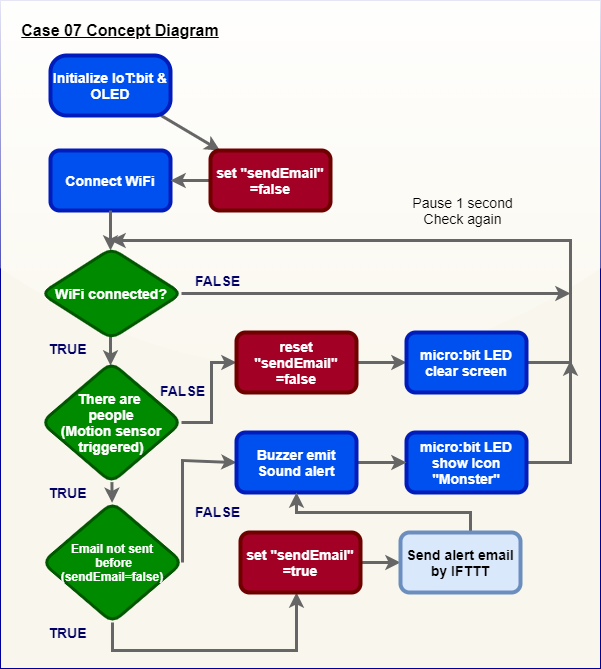
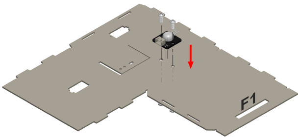
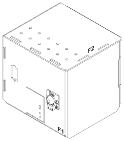
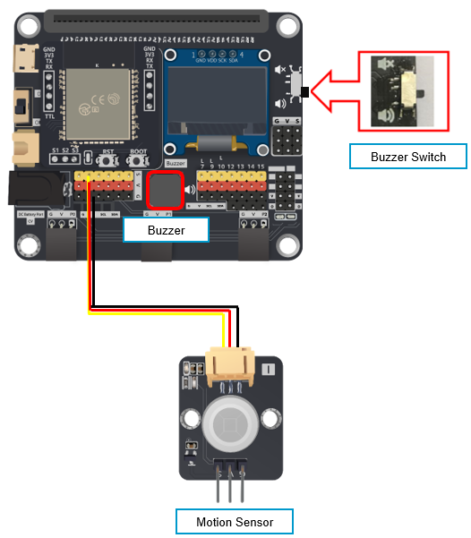
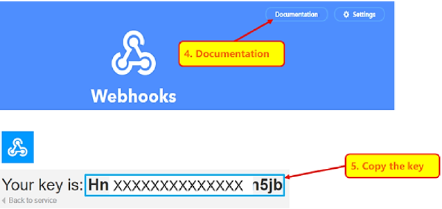
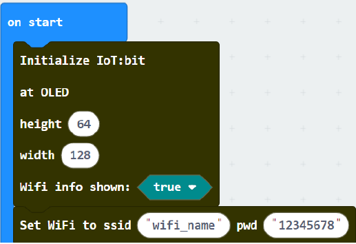
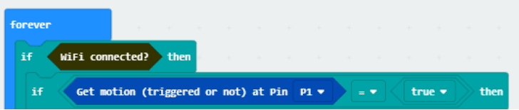
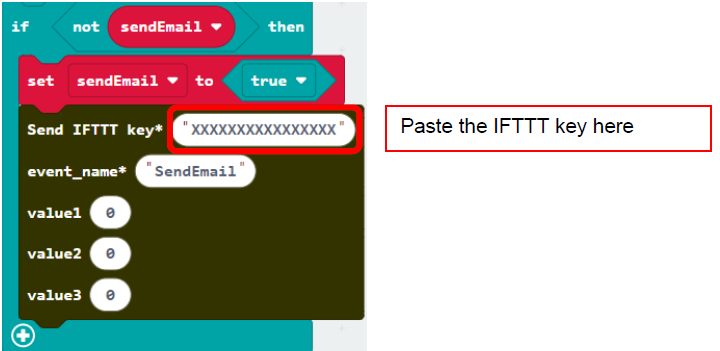
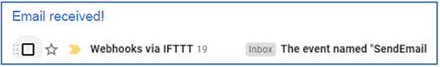

16. IoT Case 07: Smart defense system¶
Level: 

16.1. Goal¶
Make a smart defense system which emits sound and sends an email to the house owner if there are any suspicious movement near the door.
16.2. Background¶
What is IFTTT?
IFTTT can help connect all your different apps and devices which enables them to work together to do specific tasks.
Smart defense system operation
The motion sensor can deliver a motion signal to the micro:bit. When the micro:bit detects the signal, the buzzer will emit sound and send an email to specific email account through IFTTT. Also, a monstor icon will be shown on the micro:bit if there are suspicious people passes by.


16.4. Assembly step¶
Step 1
Attach the motion sensor to F1 model.


Step 2
Put together all the cardboard parts (F1-F2)

Step 3
Assembly completed! 
16.5. Hardware connect¶
Connect the Motion Sensor to P1 port of IoT:bit
Turn on the Buzzer Switch on P0 port of IoT:bit

16.6. IoT (IFTTT)¶
* For more details, please refer to Chapter 2: Send Email by IFTTT
Step 1
Go to https://ifttt.com , create applet (if webhooks then Email)

Step 2
Go to “My services” > “Webhooks”, select “Documentation” . Copy your Webhooks Key as follows:

16.7. Programming (MakeCode)¶
Step 1. Initialize OLED, IoT:bit and connect to WiFi
Snap
Initialize OLED with width:128, height: 64toon startSnap
Initialize IoT:bit TX P16 RX P8fromIoT:bittoon startSnap
Set Wi-Fi to ssid pwdfromIoT:bitEnter your Wi-Fi name and password. Here we set
smarthonasSSIDand12345678aspassword
Step 2: Show icon “tick” after WiFi connection
Snap
show iconfrombasictoOn WiFi connectedand select icontick
Step 3. Check motion sensor value
Snap
if statementto blockforeverIf
WiFi is connected,If
get motion (triggered or not) at Pin P1=truethen, that’s say someone is near the door. 
Step 4. Send notification when someone pass by
Snap
if statementto blockforeverIf
WiFi is connected, then snapplay tone Middle C for 1 beatfrommusicSnap
show iconfrombasicand select amonster iconSnap
Send IFTTT key…fromIoT:bit>IoT Services, input yourIFTTT keyand input event nameSendEmail
Step 5. Show smile icon when no one pass by
Snap
show iconintoElse, and select iconsmileSnap
Pauseafterif statementto the loop for 1 second delay for checking
Full Solution
MakeCode: https://makecode.microbit.org/_DWy49KEoCgVX
You could also download the program from the following website:
16.8. Result¶
When WiFi is connected, if there are any suspicious movement near the door, the buzzer will emit sound and an email will be sent to the house owner. Also, a monster icon will be shown on the micro:bit.


16.9. Think¶
Q1. How to avoid sending duplicate emails? (tips: using variable)
Q2. How to distinguish suspicious people (e.g. password authentication)?